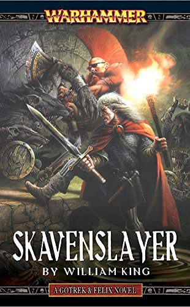
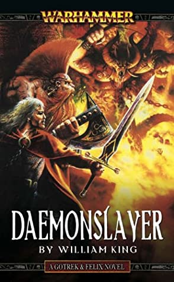
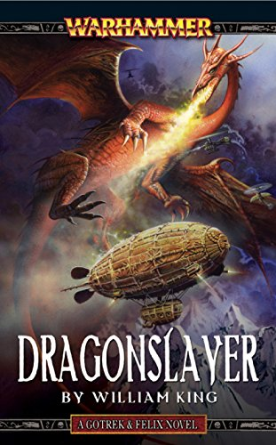
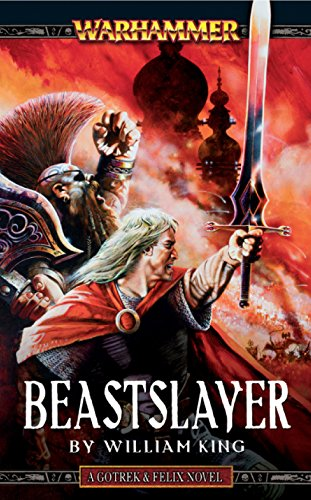

Trollslayer
Author:
First released: Aug 1999
Completed on: Pending
Skavenslayer
Author:
First released: Sep 1999
Completed on: Dec 2019
Daemonslayer
Author:
First released: Oct 1999
Completed on: Pending
Book Tracker v1.0
|
|
TrollslayerAuthor: Completed on: Pending |
 |
SkavenslayerAuthor: Completed on: Dec 2019 |
 |
DaemonslayerAuthor: Completed on: Pending |
||||
|  |
DragonslayerAuthor: Completed on: Pending |
 |
BeastslayerAuthor: Completed on: Pending |

|
VampireslayerAuthor: Completed on: Pending |

|
GiantslayerAuthor: Completed on: Pending |

|
OrcslayerAuthor: Completed on: Pending |

|
ManslayerAuthor: Completed on: Pending |

|
ElfslayerAuthor: Completed on: Pending |

|
ShamanslayerAuthor: Completed on: Pending |

|
ZombieslayerAuthor: Completed on: Pending |